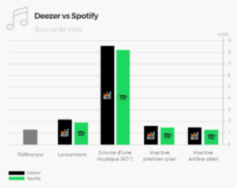

Deezer
Deezer est une application créer par des Français en 2007afin de povoir streamer des musiques partout dans le mondeDeezer à de nombreux concurrent mais très peux de concurrent directSon principal concurrent direct est SpotifyMais Deezer reste une application préferer par le publique car ses prix sont plus avantageux que ce de Spotifyavec une offre basique de 5,99€ pour Deezer alors que pour Spotify le prix dis basique est de 9,99€Cette différence de prix ce faire encore plus ressentir avec les offres familliales Pour deezer le prix est de 12,99€ alors que pour Spotify le prix est de 15,99€

Vous n'êtes toujours pas convaicue? Que vous faut-il de plus ?
Deezer possède l'une des plus grande bases de musiques avec plusieurs centaines de millions de titres Un mode d'écoute hors connexion
Et deezer à son propre algorithme pour vous faire écouter des musiques selon vos envies